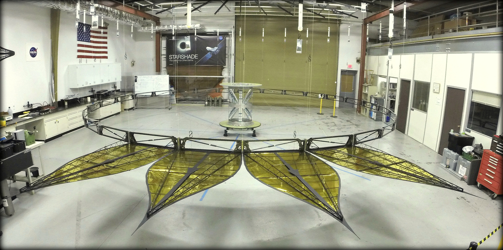

A space occulter used to hunt for new planets
In the summer of 2014 I interned at NASA's Jet Propulsion Laboratory (JPL) for 10 weeks working on Project Starshade. Though I cannot disclose specifics on the project, I have written up a general description of my work. Most of the information below can readily be found online.
A starshade, also dubbed an external occulter, is a precisely shaped screen that flies in far-away formation with a space telescope. The device blocks a star's light to create a high-contrast shadow, so that only light from an orbiting exoplanet enters the telescope for detailed study. The starshade has flower shaped petals which are patterned in a very precise manner to reduce the bending of light waves. Advantages of the starshade include its versatility (the starshade could be use with most current telescopes) and the fact that it encourages simpler future telescope designs (since they would not have to deal with light from the star). Despite the benefits, there are challenges in the form of precision: the starshade must launch and deploy so that everything ends up in the right place - within millimeters. Achieving such tolerances is more impressive when you consider the fact that the starshade could be over 100 feet.
This concept has moved beyond the drawing board at JPL and as part of the process, I helped show part of the starshades feasibility. Specifically, I helped show that the necessary ring truss could be created and deployed to within the desired tolerances. My work primarily included building the truss and designing procedures for ease of repeatibilty when building the frame. Ensuring that my work was well documented and repeatable was essential to this projects, thus several fixtures were designed and created in order to help future employees assemble the Starshade with precision. On top of this, the fixtures and methods were designed with the thought of minimizing loads on the various components used.
A released photo of my work this summer can be seen below. The ring truss originally stows in the center cylinder and deploys to the seen full position. An animation of the expected finished product, along with more information on the project, can be seen here
A released summary of my work is shown below:
August 2014 brought the unveiling of the Starshade Deployment Testbed (SDT) at JPL. This testbed is meant to enable scientists and engineers to meet the challenging petal stowing and deployment requirements for a possible future Starshade mission.
The first sub-assembly test was the deployment of a 10m diameter expanding ring truss, to which the Starshade petals attach. Led by three early-career JPL engineers, the truss concept design began in February 2014 and involved a team of six interns and four student workers. By August, the truss concept with 4 of the design's 28 petals was ready for a functional deployment. The designing and building of this prototype provided the opportunity for these university students to be critical members in the flight path development of an exciting potential NASA mission.
This testbed, open to investigators from all institutions, will be a platform for advancing the technology readiness level of the many Starshade subsystems. These include the optical shield, petal stowing and unfurling system, and the many critical interfaces to the spacecraft.